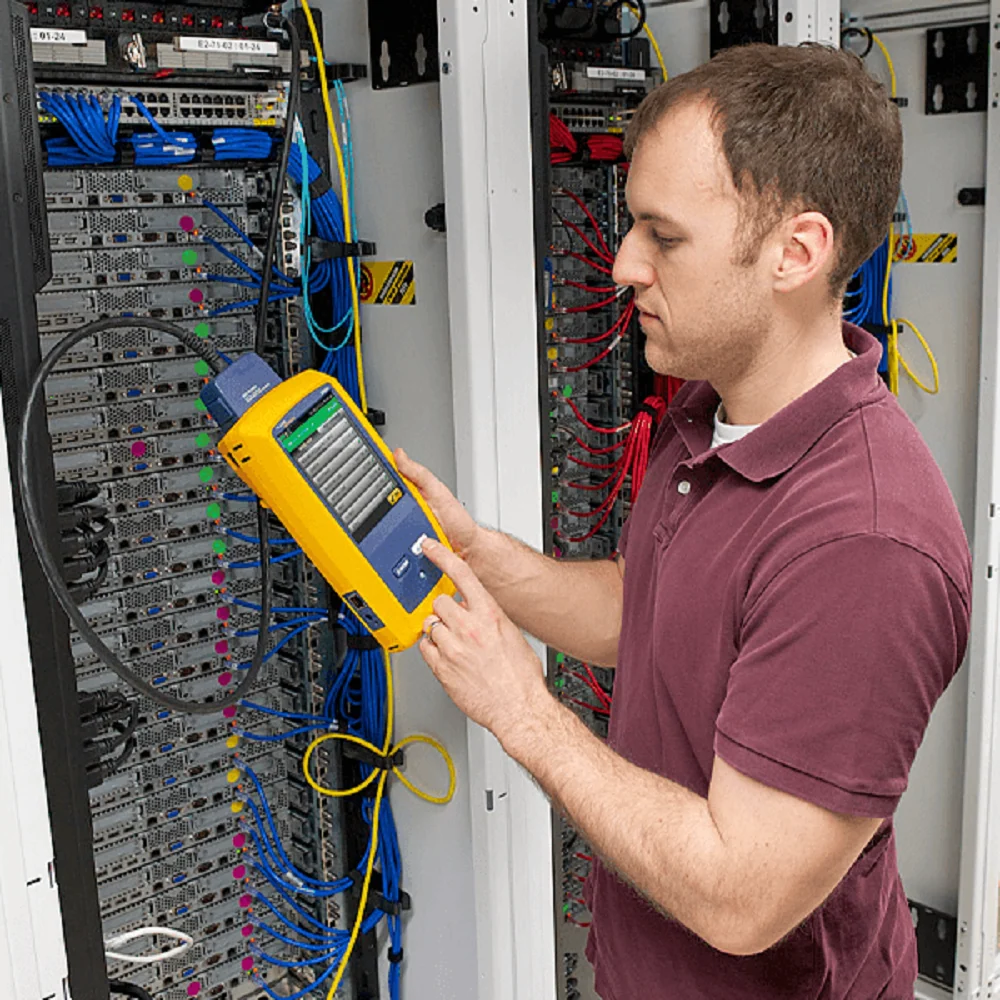
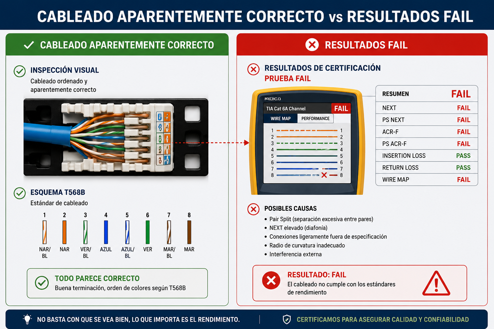
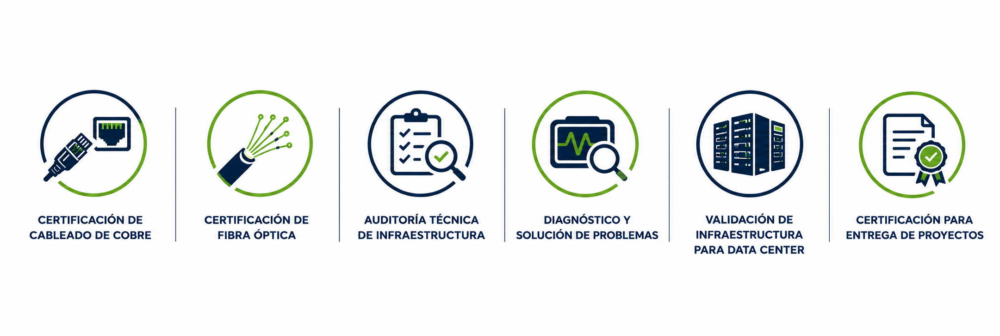

En Validación Integral realizamos certificaciones técnicas y pruebas especializadas para garantizar que su infraestructura de cableado estructurado, fibra óptica y redes cumpla con las normas ANSI/TIA e ISO/IEC, utilizando equipos certificados de última generación.

Validamos que toda su infraestructura tecnológica funcione conforme a los estándares internacionales, reduciendo riesgos, evitando fallas y garantizando la calidad de su inversión.
Muchos proyectos presentan pérdidas de rendimiento, fallas intermitentes o incumplimiento de normas debido a errores de instalación que no son visibles a simple vista.
Una certificación profesional permite identificar estos problemas antes de la entrega del proyecto, evitando reprocesos, pérdidas económicas y reclamos posteriores.

No solo verificamos que un cable funcione. Validamos que cada componente de la infraestructura cumpla con los parámetros establecidos por los fabricantes y los estándares internacionales, asegurando el rendimiento esperado de la red.

Certificación bajo normas ANSI/TIA e ISO/IEC en canales y Permanent Link.
Medición con OLTS y OTDR para validar la integridad del enlace completo.
Evaluamos integralmente la instalación: cumplimiento de normas, calidad de instalación, estado de conectores, organización de racks, inspección física, identificación de errores y etiquetado normativo.
Identificamos el origen de fallas que afectan el rendimiento de la red: errores de instalación, interferencias, NEXT, atenuación, return loss, alien crosstalk, pérdidas, enlaces defectuosos, daños físicos y errores de terminación.
Validamos backbone, troncales, cableado horizontal y vertical, MPO, fibra óptica y organización física de racks.
Certificación final requerida antes de la entrega para constructoras, integradores, telecomunicaciones, centros de datos, industria, minería, hospitales y gobierno.
Garantiza el máximo rendimiento del enlace instalado.
Detecta errores antes de la entrega del proyecto.
Muchos fabricantes exigen certificación para respaldar la garantía.
ANSI/TIA, ISO/IEC e IEEE, en un solo reporte.
Una infraestructura correctamente certificada presenta menos incidencias.
Ideal para empresas, minería, industria y gobierno.
Un flujo de trabajo diseñado para no dejar nada librado al azar.
Reconocimiento del proyecto y las condiciones de acceso.
Registro del alcance real: cantidad de puntos, categoría y medios a certificar.
Mapeo y rotulado de cada enlace antes de iniciar la medición.
Medición punto por punto con el Fluke DSX-8000 en obra.
Se documentan los enlaces en FAIL y se coordina su corrección con el instalador.
Nueva medición de los enlaces corregidos hasta obtener PASS.
Reporte consolidado con resultados, respaldo técnico y recomendaciones.
Cada enlace es sometido a pruebas conforme a su categoría y evaluado bajo los parámetros establecidos por las normas internacionales.
En Validación Integral utilizamos el Fluke Networks DSX-8000 CableAnalyzer, uno de los equipos de certificación de cableado más avanzados y reconocidos a nivel mundial, utilizado para validar infraestructuras críticas conforme a los estándares internacionales.
Nuestro compromiso es entregar resultados técnicamente confiables.
Cada certificación es realizada con equipos Fluke Networks de última generación, siguiendo procedimientos basados en normas ANSI/TIA e ISO/IEC, garantizando mediciones precisas, reportes profesionales y una evaluación objetiva de la infraestructura.
¿Qué beneficios obtiene su proyecto?
El respaldo documental completo para el cierre formal de su proyecto.
Documento técnico consolidado y firmado.
Archivo nativo del certificador para auditoría posterior.
Resultado individual de cada punto certificado.
Panorama general de resultados para tomadores de decisión.
Detalle de puntos con resultado FAIL y su causa probable.
Acciones sugeridas para corregir cada observación.
Registro histórico de todos los puntos certificados.
No solo certificamos.
Idealmente antes de la entrega o cierre del proyecto, y también al recibir una instalación ejecutada por terceros, para validar que cumple con lo contratado.
Trabajamos bajo los estándares ANSI/TIA e ISO/IEC vigentes para cableado de cobre y fibra óptica, con criterios de aceptación reconocidos internacionalmente.
Certificamos con el Fluke Networks DSX-8000 CableAnalyzer, uno de los equipos de referencia de la industria para certificación Nivel III/IV.
El tiempo en campo depende de la cantidad de puntos, pero el informe digital se entrega en un máximo de 24 horas tras finalizar la medición.
Visita técnica, levantamiento, certificación punto por punto, corrección de observaciones si aplica, re-certificación y entrega del informe final completo.
Sí. Recibe un reporte PDF, el archivo nativo LinkWare, el listado PASS/FAIL, resumen ejecutivo, observaciones y recomendaciones.
Documentamos el punto exacto de la falla, coordinamos la corrección con el equipo instalador y realizamos una re-certificación sin costo adicional en la misma visita.